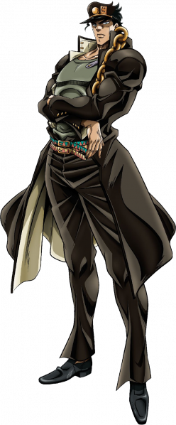
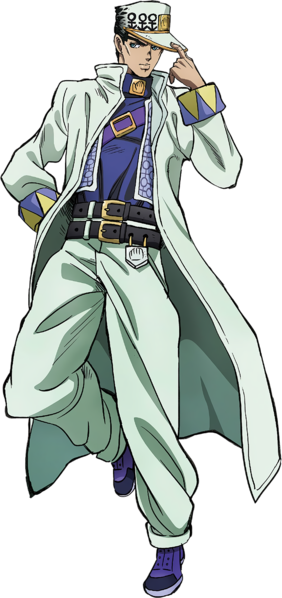
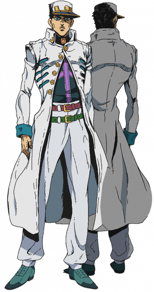
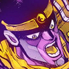

-
Jotaro Kujo
-
Aparência
-
Stardust Crusaders
-
Diamond Unbreakable
-
Golden Wing
-
Stone Ocean
-
Personalidade
-
Habilidades
-
Aperfeiçoamento
-
Habilidade Pessoal
-
Familiares
“ Mas que saco...(Yare Yare Daze) ”
Jotaro Kujo (空条 承太郎 Kūjō Jōtarō) é o protagonista da terceira parte de JoJo's Bizarre Adventure, Stardust Crusaders, e o terceiro JoJo da série. Ele também aparece como um aliado em Diamond is Unbreakable e Stone Ocean, e uma breve aparição em Vento Aureo. Como resultado de todas suas aparições, Jotaro é o JoJo protagonista mais recorrente em toda a série.
Jotaro é um delinquente (番長 Banchō) mestiço (metade-japonês) que vive uma vida comum até que o antigo nêmesis da Família Joestar, DIO, retorna. Ao ver sua mãe Holy ficar doente por causa do despertar de DIO, Jotaro embarca em uma jornada pelo mundo junto ao seu avô, Joseph Joestar, e um grupo de amigos para salvar sua mãe e derrotar o vampiro de uma vez por todas.
Sendo o portador do todo-poderoso Star Platinum, Jotaro é o primeiro JoJo introduzido com um Stand, e está entre um dos mais bem-conhecidos personagens da série. Ele é o ex-marido de uma mulher estadunidense e o pai de Jolyne Cujoh, a protagonista de Stone Ocean
Jotaro é canônicamente estabelecido como tendo 195 cm (6 ft 5 in) de altura e sendo musculoso, que é muitas vezes descrito por outros personagens como atraente. Ele tem cabelo escuro que constantemente se mistura com seu cabelo, uma mandíbula forte, sobrancelhas grossas, e olhos verdes. Quando jovem, ele possuia certa semelhança com seu trisavô, Jonathan Joestar, e com seu avô, Joseph Joestar. Partes superficiais das vestimentas de Jotaro mudam em cada parte de JoJo em que ele aparece. Os elementos mais reconhecíveis de seu design são, um boné ornamentado com visor, cortado na parte de trás e se fundindo com seu cabelo, e um sobretudo que se estende até a metade de sua panturrilha, com uma gola mandarim e correntes grudadas na vestimenta. Suas vestes foram influênciadas pelo Babel II um mangá famoso sobre um menino em uniforme escolar tendo uma aventura no deserto.
 Jotaro veste um gakuran do tamanho de um sobretudo, com uma borda alta e rígida, perfurada na esquerda com uma corrente dourada. Por baixo, ele veste uma camisa regata, e um par de calças justas com barras originais curtas e afiadas, segurada por dois cintos finos, muitas vezes coloridos, estampados em uma sequência de triângulos coloridos (refletindo a bandana de Joseph/Caesar). Ele também veste um par de sapatos de couro (presumidamente) sem meias. O boné icônico do Jotaro é adornado com um botão dourado perto do centro, e na sua esquerda, um retângulo dourado com o design de uma mão. Ele é cortado atrás, e se misturando com seu cabelo. Enquanto eles são primeiramente mostrados como sendo completamente separados mas meio cortado, publicações posteriores causam mais incerteza sobre onde seu boné e seu cabelo se encontram. De acordo com o Araki em uma entrevista, ele queria que leitores reconhecessem o Jotaro mesmo de costas, e não só de frente.
 As roupas de Jotaro passam por uma grande mudança entre a de Stardust Crusaders, em adição a própria roupa também passa por várias transições durante Diamond is Unbreakable. Cada uma possui sua combinação famosa de um boné e um sobretudo. Ele veste calças largas, e seu chapéu, casaco e calças são tipicamente retratados como sendo brancos. Na sua primeira roupa, ele veste um sobretudo com as bordas enroladas para trás e mangas com o mesmo padrão xadrez de seus cintos. Por baixo do casaco é um tipo de macacão sobre uma camisa com colarinho alto; uma alça com fivela passa pelo seu peito. Seu chapéu tem um emblema metálico de "J" junto do emblema de palma que ele já possuia, porém agora dentro de um coração. Na sua segunda rupa, usada pela primeira vez durante o arco Vamos Caçar!, possui um estilo parecido com seu uniforme escolar com a borda de seu casaco para cima e uma camisa justa. Os emblemas de seu chapéu são trocados por um golfinho e um sol, enquanto seu sobretudo possui um emblema metálico de dois golfinhos formando um coração no ombro direito e um esquadro com o símbolo de uma palma na esquerda.
 Jotaro mantem seu chapéu clássico na mesma cor clara porém agora com um corte notavelmente maior na parte de trás de seu chapéu, resultando em uma mistura ainda mais anormal entre seu cabelo e boné. Um pingente circular com o símbolo icônico de uma mão frequentemente mostrado no seu chapéu é visto grudado a uma linha que aparentemente é envolvido em volta do boné, vem de dentro dele e acaba nas bordas metálicas de sua aba. Seu sobretudo claro aparece muito mais justo com suas bordas longas adornadas com símbolos metálicos de "J". Ele tem aberturas diagonais nos lados e apenas os botões de cima estão abotoados. De baixo do sobretudo de Jotaro é uma camisa de gola alta com outro símbolo de mão em seu pescoço. A camisa mostra duas linhas claras cruzando uma com a outra e suas mangas são enroladas. Os dois cintos vibrantes de jotaro são vestidos corretamente, as pernas de suas calças são longas, aparecendo meio empurrada acima de seus sapatos.
 Jotaro novamente veste um sobretudo escuro; dessa vez com mais detalhes. Linhas saem do topo e a base
das bordas; se
juntando na altura da abertura do casaco. Essa superfície de suas bordas possui dois broches de estrela,
com um na parte
de dentro, junto com uma pequena corrente grudada na esquerda. Duas linhas atravessam o topo de seus
ombros, com duas ou
mais radiando das bordas até os lados. Dois zíperes se encontram entre o peito e o estômago. Os lados de
seus ombros
possuem estrelas grandes, começando uma linha clara indo até suas mangas (que também possuem uma
estrela) onde está
escrito "JOJO", repetidamente. Uma linha atravessa a axila até o final do casaco.
Ele veste uma camisa clara, com a estampa de uma estrela grande. Seus sapatos e calças possuem a textura
da pele de uma
cobra. Ele veste um único cinto de couro, cravejadas em duas linhas, enrolada em si mesma antes da
fivela.
O boné rasgado de Jotaro, também é novamente escuro. A aba é redonda, com um arco fino. Uma barra
dourada clara em sua
articulação mantem o emblema dourado de palma igual o seu original. Duas linhas atravessam o topo da
aba, enquanto uma
estrela alargada atravessa toda a frente do topo do chapéu, seu ponto mais alto indo até o topo.
Jotaro novamente veste um sobretudo escuro; dessa vez com mais detalhes. Linhas saem do topo e a base
das bordas; se
juntando na altura da abertura do casaco. Essa superfície de suas bordas possui dois broches de estrela,
com um na parte
de dentro, junto com uma pequena corrente grudada na esquerda. Duas linhas atravessam o topo de seus
ombros, com duas ou
mais radiando das bordas até os lados. Dois zíperes se encontram entre o peito e o estômago. Os lados de
seus ombros
possuem estrelas grandes, começando uma linha clara indo até suas mangas (que também possuem uma
estrela) onde está
escrito "JOJO", repetidamente. Uma linha atravessa a axila até o final do casaco.
Ele veste uma camisa clara, com a estampa de uma estrela grande. Seus sapatos e calças possuem a textura
da pele de uma
cobra. Ele veste um único cinto de couro, cravejadas em duas linhas, enrolada em si mesma antes da
fivela.
O boné rasgado de Jotaro, também é novamente escuro. A aba é redonda, com um arco fino. Uma barra
dourada clara em sua
articulação mantem o emblema dourado de palma igual o seu original. Duas linhas atravessam o topo da
aba, enquanto uma
estrela alargada atravessa toda a frente do topo do chapéu, seu ponto mais alto indo até o topo.
Jotaro é introduzido como um delinquente grosso e violento, mas que tem um coração gentil e é leal a aqueles que ele gosta. Ele é altamente perceptivo, inteligente e perspicaz enquanto mantendo uma atitude perpetualmente calma, meio neutra ou desinteressada. Ele tem o hábito de murmurrar "Gimme a break..." (やれやれだぜ Yare Yare Daze) para si mesmo para expressar seu aborrecimento com as coisas que acontecem perto dele, ao ponto disso se tornar sua frase de efeito. Hirohiko Araki foi inspirado por Clint Eastwood quando criando Jotaro. Como Eastwood em alguns filmes, Jotaro não corre, seus movimentos são mínimos, e ele é um indivíduo quieto. A famosa pose de Jotaro onde ele aponta seu dedo foi inspirada por Eastwood apontando sua .44 Magnum e a frase de efeito de Jotaro também foi inspirada por frases que Eastwood disse em alguns de seus pápeis.
Um dos Stands mais fortes da série, Star Platinum possui sentidos, força, precisão, e velocidade sobre-humanas. Assim como outros Stands fisicamente poderosos (ou de Curto-Alcance), Star Platinum sofre de um alcance muito estreito; ativo apenas em um raio de 2-3 metros de Jotaro. Ele é do mesmo tipo de Stand que o The World de DIO, e, também pode parar o tempo, uma habilidade revelada no final de sua luta com DIO. A carta de Tarô "A Estrela", cujo nome é a origem do nome de seu Stand, simboliza a esperança, acima de tudo.
| Imagem | Estreia | Tipo | Habilidade | Grito de Batalha |
|---|---|---|---|---|
|  | Capítulo 114 / Sc Episódio 1 | Curto-Alcance | Capacidades Sobre-Humanas, Parar o Tempo |
O sentido natural de batalha e o pensamento flexível de Jotaro o torna extremamente proficiente no uso de seu Stand, que é facilitado por quão poderoso ele é. No seu uso mais básico, Star Platinum pode socar quase todos obstáculos que Jotaro encontra, mas ele também pode ser muito maginativo quando aplicado com seu poder físico, como alongar os membros de Star Platinum para um alcance extra ou usar seus pulmões para neutralizar Justice.
Jotaro frequentemente tira proveito dos atributos sobre-humanos de seu Stand para aumentar suas próprias capacidades. Ele também é capaz de usar a visão aprimorada do Star Platinum para que ele mesmo veja objetos longíquos, e como outros usuários de Stand, pode bloquear ataques direcionados a ele com seu Stand. Jotaro muitas vezes se defende ao canalizar o Star Platinum fora de seu corpo, o que também permite que ele use sua força aprimorada para se lançar ao ar. Essa técnica de salto é introduzida durante a batalha contra N'Doul, e utilizada durante o confronto final de Jotaro com DIO. Devido a sua duração curta, Jotaro apenas para o tempo economicamente. Ele usa essa habilidade defensivamente na maioria das vezes, utilizando o tempo parado para defender um aliado ou desviar de ataques, e apenas ocasionalmente usou o tempo parado ofensivamente.
Inteligência: Jotaro é um estrategista adepto, usando uma mistura de força bruta direta com truques inesperados para prevalecer. Graças a força tremende do Star Platinum, Jotaro pode usar sua força para sair de situações difíceis ou usar proezas de força como cavar um túnel até seu inimigo ou usar sua capacidade pulmonar para neutralizar um Stand de névoa. Jotaro ocasionalmente utiliza o ambiente para sua vantagem, enchendo suas roupas com livros grossos quando esperando que DIO o atacasse com projéteis contra ele, ou tirando proveito total do planador do The Fool para se aproximar de N'Doul.
Conhecimento: É sugerido que Jotaro acumulou uma quantidade considerável de conhecimento variado. No começo da Parte 3, em sua cela, para entender seu Stand, ele acumulou vários livros sobre o paranormal. Na Parte 4, é revelado que ele se especializou em biologia marinha; e concisamente informa Josuke sobre as tarefas de caçar dois ratos que possuiam Stands.
Força: Enquanto não tendo os níveis de força sobre-humana possuídas por seu Stand, o próprio Jotaro ainda sim é notavelmente forte, e já foi por bastante tempo; até quando rejuvenescido pelo Sethan, ele foi capaz de entregar socos dolorosos contra um homem crescido.
Dureza: Jotaro é naturalmente confiante e ignorante de sugestões que ele deva protelar em qualquer forma, apoiado por sua própria força assim como a de seu Stand.
Blefes: Durante ambos os arcos de Telence T. D'Arby e Daniel J. D'Arby, Jotaro venceu através de um habilidade impressionante de blefar, vista pelo sua rejeição de ver suas cartas quando jogando pôquer contra o D'Arby mais velho, e tendo a confiança de depender de Joseph Joestar para entender seus sinais ao anunciar seu arremesso contra o D'Arby mais novo.
Joseph Joestar: Jotaro normalmente não compartilha o humor de seu avô, e os dois tem personalidades muito diferentes. Apesar de suas diferenças, eles parecem se dar bem, e riem juntos de tempos em tempos, e foram capazes de formar uma ligação muito maior durante sua jornada ao Egito para salvar Holy.
Josuke Higashikata: Os dois tem um relacionamento de mentor e aprendiz. Embora Josuke seja mais jovem que ele, Jotaro é seu sobrinho. Quando eles se conheceram, Josuke atacou Jotaro por ter mencionado seu cabelo em um tom negativo (apesar de Jotaro não ter tido a intenção de insultar Josuke), mas com o curso da obra, os dois se tornaram aliados e ajudaram um ao outro inúmeras vezes contra vários Stands inimigos surgindo em Morioh. Jotaro respeita a habilidade e bondade de Josuke mas é irritado por seu temperamento, e confiou nele completamente durante sua luta contra o Carcomido.
Giorno Giovanna: Enquanto eles nunca se conheceram pessoalmente, Jotaro investigou Giorno devido a suas conexões com ambos DIO e a família Joestar. Tendo descoberto a relação de Giorno com DIO, Jotaro evitou conhecê-lo em pessoa, e confiou Koichi com seu julgamento no seu lugar.
Sadao Kujo: Como um músico famoso de jazz, Sadao deixou sua família para ir em uma turnê, mas nunca foi visto na obra. É desconhecido por quanto tempo ele esteve ausente, mas não há nenhuma indicação de Jotaro guarde algum rancor por ele por causa disso.